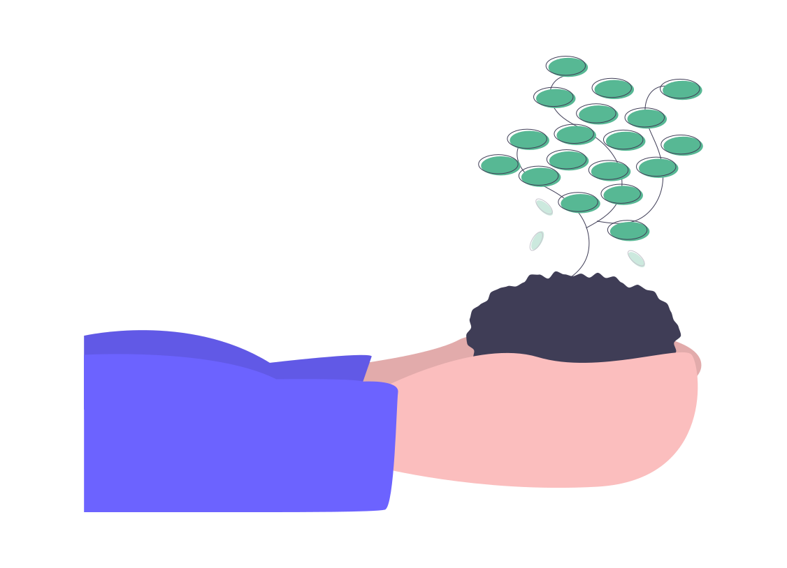

Les poubelles connectées envoient des signaux aux équipes d'entretien grâce à des capteurs. Les équipes d'entretien, équipées de GPS, calculent le trajet le plus rapide pour la collecte.
Pour profiter du nouveau système de gestion des déchets à Lyon, vous devrez demander le remplacement de vos poubelles via l'application mobile. Cette application vous guidera à travers le processus de demande de changement. Des informations supplémentaires, telles que votre adresse, le nombre de résidents et le nombre de poubelles, pourront vous être demandées. Bien entendu, ce service est entièrement gratuit.
Pour toutes demande vous référer à la section "Gestion des demandes"

Préservé l'environnement
La mise en place de ce nouveau système permettra de protéger l'environnement de la ville de Lyon, afin que nous puissions vivre dans un environnement écologique et respectueux de la nature, pour une ville plus saine pour tous.

Garder une ville propre
Maintenir une ville propre en poussant les déchets à la poubelle pour qu'ils puissent être recyclés, favoriser une meilleure gestion des déchets pour une meilleure organisation.